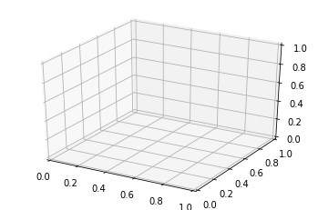
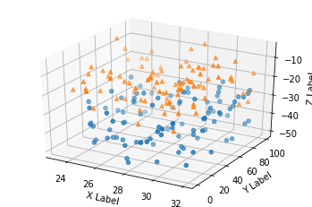
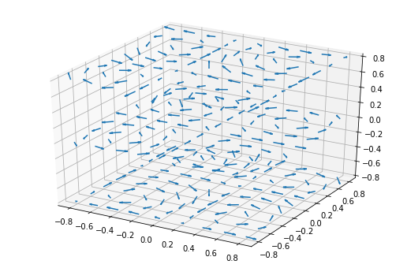

Matplotlib¶

import matplotlib.pyplot as plt
fig = plt.figure()
ax = fig.add_subplot(projection='3d')

3D scatterplot¶
Demonstration of a basic scatterplot in 3D.
import matplotlib.pyplot as plt
import numpy as np
# Fixing random state for reproducibility
np.random.seed(19680801)
def randrange(n, vmin, vmax):
"""
Helper function to make an array of random numbers having shape (n, )
with each number distributed Uniform(vmin, vmax).
"""
return (vmax - vmin)*np.random.rand(n) + vmin
fig = plt.figure()
ax = fig.add_subplot(projection='3d')
n = 100
# For each set of style and range settings, plot n random points in the box
# defined by x in [23, 32], y in [0, 100], z in [zlow, zhigh].
for m, zlow, zhigh in [('o', -50, -25), ('^', -30, -5)]:
xs = randrange(n, 23, 32)
ys = randrange(n, 0, 100)
zs = randrange(n, zlow, zhigh)
ax.scatter(xs, ys, zs, marker=m)
ax.set_xlabel('X Label')
ax.set_ylabel('Y Label')
ax.set_zlabel('Z Label')
plt.show()

3D quiver plot¶
Demonstrates plotting directional arrows at points on a 3D meshgrid.
import matplotlib.pyplot as plt
import numpy as np
ax = plt.figure(figsize=(9, 6)).add_subplot(projection='3d')
# Make the grid
x, y, z = np.meshgrid(np.arange(-0.8, 1, 0.2),
np.arange(-0.8, 1, 0.2),
np.arange(-0.8, 1, 0.8))
# Make the direction data for the arrows
u = np.sin(np.pi * x) * np.cos(np.pi * y) * np.cos(np.pi * z)
v = -np.cos(np.pi * x) * np.sin(np.pi * y) * np.cos(np.pi * z)
w = (np.sqrt(2.0 / 3.0) * np.cos(np.pi * x) * np.cos(np.pi * y) *
np.sin(np.pi * z))
ax.quiver(x, y, z, u, v, w, length=0.1, normalize=True)
plt.show()
